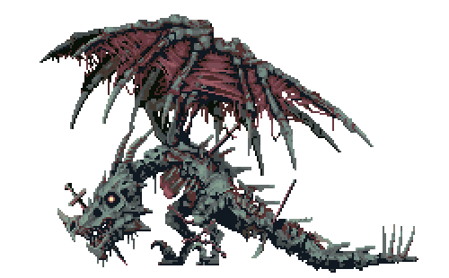
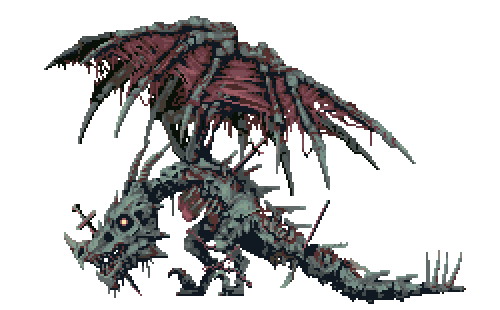
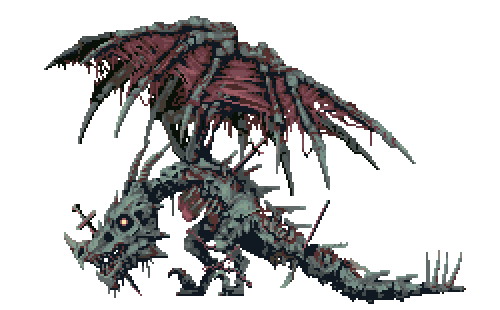
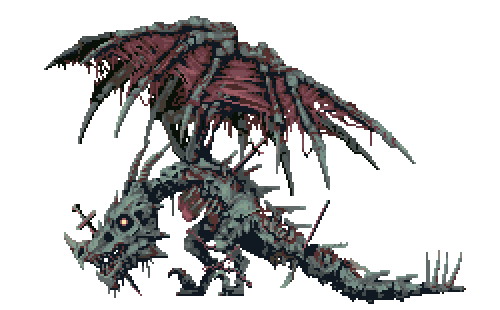
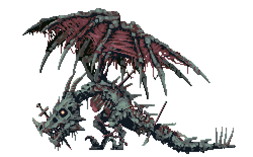
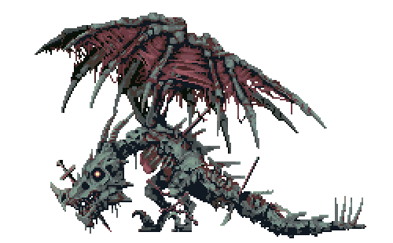

Midroiya percebe que o dragão está cansado. Então ele decide atacar com seu poder máximo.
1- One For All- 100%: uma técnica que permite a Izuku atacar usando todo o poder do One For All na parte desejada de seu corpo, com custo de quebrá-la após a execução.
2- One For All- 30%: uma técnica que permite a Izuku usar 30% do One For All no braço direito.